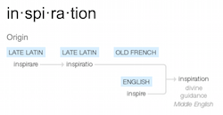

- Welcome
- First Things First
- tl;dr
- 1 Course Philosophy
- 2 Rubric and Assessment
- 3 Final Project
- 4 Setting up your machine
- 5 Code of Conduct
- 6 Carleton University Academic Regulations
- 7 Questionnaire
- 8 Contact Details
1.2 On Craftiness
Great art comes from inspiration. Technical skill, yes of course. But ‘inspiration’ - the divine breath. Science? Science requires hard work and graft. Careful observation, attention to detail, replication, routine and method. Carefully record everything, and someone else could (should be able to) replicate it. Yes, there is insight and eureka moments, but we can agree that art and science are at different points along the continuum. So what of craft? I know a man who is astonishingly good at wood working. He will stand there, quietly, while he contemplates a piece of wood. Then, without a word, he begins to work with it. He sees the grain, and can feel how the piece is going to go. The materials can be guided, but they push him as much as he pushes them. The resulting piece can be typed - ‘Oh, you make a shaker-style chair’ - but, in its own quiet way, it is unique.
 To my mind, digital history sits in the realm of craft. Maybe digital history is at the midway point on the continuum between art and science. Or maybe ‘craftiness’ is just another axis, and there are a landscape of possible configurations in the x,y,z space of art/science/craft. In any event, there is no recipe I can give you that will enable you to ‘do’ digital history. Sure, I can show you how to topic model, and you can run data through it like grist through a mill, but that’s not to say that the result is meaningful. The craft of digital history lies in knowing which techniques work best with what materials - and in knowing when to go against the grain. It lies in producing sometimes beautiful unique pieces that bring out a greater truth, that stand on their own. At other times, it involves quietly producing the one piece that fits perfectly into the larger argument.
To my mind, digital history sits in the realm of craft. Maybe digital history is at the midway point on the continuum between art and science. Or maybe ‘craftiness’ is just another axis, and there are a landscape of possible configurations in the x,y,z space of art/science/craft. In any event, there is no recipe I can give you that will enable you to ‘do’ digital history. Sure, I can show you how to topic model, and you can run data through it like grist through a mill, but that’s not to say that the result is meaningful. The craft of digital history lies in knowing which techniques work best with what materials - and in knowing when to go against the grain. It lies in producing sometimes beautiful unique pieces that bring out a greater truth, that stand on their own. At other times, it involves quietly producing the one piece that fits perfectly into the larger argument.
My own practice lately has been blurring between visualization/sonification and sound art. I’m hoping that over the course of this term, you will find your own crafty corner of digital history to call your own. It will change with time, practice, and exposure to digital media and ways of representing the past. What was hard becomes easier (and at the same time, less examined at a theoretical level), the goal posts move, and the latest digital toy appears on the horizon. But you will be equipped to evaluate, incorporate, ignore, as needs arise.